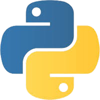
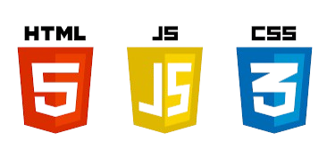
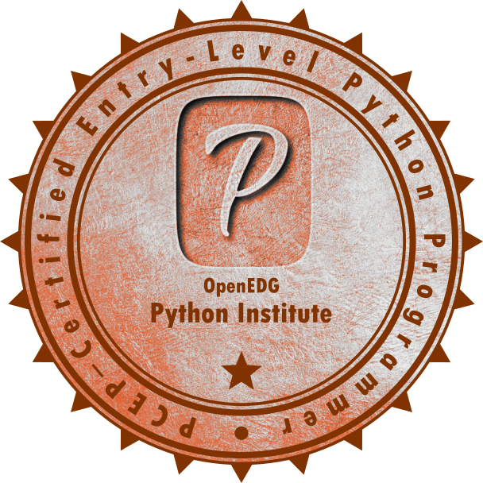

<!DOCTYPE html>
<html lang="en">
<head>
    <meta charset="UTF-8">
    <meta name="viewport" content="width=device-width, initial-scale=1.0">
    <title>Tania I. Ortiz | My Portfolio Website/title>
    
    <style>
        :root {
            /* Color Palette */
            --bg-primary: #050505;
            --bg-card: #0f1214;
            --text-primary: #e0e0e0;
            --neon-aqua: #00ffc8;
            --neon-purple: #bd00ff;
        }

        /* 1. INITIAL SETUP */
        html {
            scroll-behavior: smooth; /* Makes clicking nav links scroll smoothly */
        }

        body {
            font-family: "Yu Mincho", "Hiragino Mincho ProN", "Noto Serif JP",
               "Segoe UI", Tahoma, Geneva, Verdana, sans-serif;
            background: var(--bg-primary);
            color: var(--text-primary);
            line-height: 1.6;
            margin: 0;
            padding: 0;
            overflow-x: hidden; /* Prevents scrollbar from animations */
        }

        .container {
            max-width: 1000px;
            margin: 0 auto;
            padding: 20px;
            /* Animation: Fade in the whole container */
            animation: fadeInPage 1.5s ease-out;
        }

        /* 2. HEADER & TYPING ANIMATION */
        header {
            text-align: center;
            padding: 80px 0 50px; /* Added more top padding */
            border-bottom: 1px solid #333;
        }

        h1 {
            font-size: 3.5rem;
            margin-bottom: 10px;
            text-transform: uppercase;
            letter-spacing: 3px;
            color: #fff;
            position: relative;
            display: inline-block;
        }

        /* The Typing Cursor Effect */
        h1::after {
            content: '';
            position: absolute;
            right: -10px;
            top: 5px;
            height: 80%;
            width: 5px;
            background-color: var(--neon-aqua);
            animation: blink 1s infinite;
        }

        .subtitle {
            font-size: 1.2rem;
            color: var(--neon-aqua);
            opacity: 0;
            animation: slideUp 1s ease-out 1s forwards; /* Delays appearance by 1s */
        }

        /* 3. NAVIGATION */
        nav {
            display: flex;
            justify-content: center;
            gap: 30px;
            margin-top: 30px;
            opacity: 0;
            animation: slideUp 1s ease-out 1.5s forwards; /* Delays appearance by 1.5s */
        }

        nav a {
            color: var(--text-primary);
            text-decoration: none;
            font-weight: bold;
            position: relative;
            transition: color 0.3s;
        }

        /* Underline expanding animation */
        nav a::after {
            content: '';
            position: absolute;
            width: 0;
            height: 2px;
            bottom: -5px;
            left: 0;
            background-color: var(--neon-aqua);
            transition: width 0.3s ease-in-out;
        }

        nav a:hover {
            color: var(--neon-aqua);
        }

        nav a:hover::after {
            width: 100%;
        }

        /* 4. SECTIONS & CARDS */
        section {
            padding: 60px 0;
            opacity: 0; /* Hidden initially */
            animation: slideUpSection 1s ease-out forwards;
            animation-timeline: view(); /* Modern browser support feature */
            animation-range: entry 10% cover 30%;
        }
        
        /* Fallback animation if 'animation-timeline' isn't supported by browser yet */
        @media (prefers-reduced-motion: no-preference) {
            section {
                animation: slideUp 0.8s ease-out forwards;
            }
            /* Stagger the animations slightly */
            #about { animation-delay: 0.2s; }
            #skills { animation-delay: 0.4s; }
            #projects { animation-delay: 0.6s; }
            #certs { animation-delay: 0.8s; }
            #resume { animation-delay: 1s; }
        }

        h2 {
            border-left: 5px solid var(--neon-aqua);
            padding-left: 15px;
            margin-bottom: 30px;
            color: #fff;
        }

        .grid-container {
            display: grid;
            grid-template-columns: repeat(auto-fit, minmax(280px, 1fr));
            gap: 25px;
        }

        .card {
            background: var(--bg-card);
            padding: 25px;
            border: 1px solid #333;
            border-radius: 8px;
            transition: all 0.4s cubic-bezier(0.175, 0.885, 0.32, 1.275); /* Bouncy effect */
            position: relative;
            overflow: hidden;
        }

        /* Neon sweep effect on hover */
        .card::before {
            content: "";
            position: absolute;
            top: 0;
            left: -100%;
            width: 100%;
            height: 100%;
            background: linear-gradient(90deg, transparent, rgba(0, 255, 200, 0.1), transparent);
            transition: 0.5s;
        }

        .card:hover::before {
            left: 100%;
        }

        .card:hover {
            border-color: var(--neon-aqua);
            box-shadow: 0 0 20px rgba(0, 255, 200, 0.2);
            transform: translateY(-8px);
        }

        .card h3 {
            color: var(--neon-aqua);
            margin-top: 0;
        }

        /* 5. SKILLS ICONS */
        .icon-grid {
            display: flex;
            gap: 20px;
            flex-wrap: wrap;
        }

        .tech-icon {
            width: 60px;
            height: 60px;
            background: #1a1d20;
            border-radius: 10px;
            display: flex;
            align-items: center;
            justify-content: center;
            border: 1px solid #333;
            transition: 0.3s;
        }

        .tech-icon:hover {
            border-color: var(--neon-aqua);
            transform: scale(1.1);
            box-shadow: 0 0 10px var(--neon-aqua);
        }

        /* 6. RESUME BUTTONS */
        .resume-section {
            background: #0a0e0f;
            border-top: 2px solid var(--neon-aqua);
            padding: 50px;
            text-align: center;
            margin-top: 50px;
        }

        .btn {
            display: inline-block;
            margin: 10px;
            padding: 12px 30px;
            border: 1px solid var(--neon-aqua);
            color: var(--neon-aqua);
            text-decoration: none;
            font-weight: bold;
            text-transform: uppercase;
            letter-spacing: 1px;
            position: relative;
            z-index: 1;
            transition: 0.4s;
            overflow: hidden;
        }

        /* Button Fill Animation */
        .btn::after {
            content: "";
            position: absolute;
            top: 0;
            left: 0;
            width: 0;
            height: 100%;
            background: var(--neon-aqua);
            z-index: -1;
            transition: 0.3s ease-in-out;
        }

        .btn:hover {
            color: #000;
            box-shadow: 0 0 25px var(--neon-aqua);
        }

        .btn:hover::after {
            width: 100%;
        }

        /* 7. DEFINING THE ANIMATIONS (KEYFRAMES) */
        @keyframes fadeInPage {
            from { opacity: 0; }
            to { opacity: 1; }
        }

        @keyframes slideUp {
            from { 
                opacity: 0; 
                transform: translateY(30px); 
            }
            to { 
                opacity: 1; 
                transform: translateY(0); 
            }
        }

        @keyframes blink {
            0%, 100% { opacity: 1; }
            50% { opacity: 0; }
        }

        /* Responsive adjustments */
        @media (max-width: 600px) {
            h1 { font-size: 2rem; }
            nav { flex-direction: column; gap: 10px; }
        }

    </style>
</head>
<body>

    <div class="container">
        
        <header>
            <h1>Tania I. Ortiz</h1>
            <div class="subtitle">BBA Cybersecurity Student</div>
            <nav>
                <a href="#about">About</a>
                <a href="#skills">Skills</a>
                <a href="#projects">Projects</a>
                <a href="#certs">Certifications</a>
                <a href="#resume">Resume & Connect</a>
            </nav>
        </header>

        <section id="about">
            <h2>About Me</h2>
            <p>
                I am a driven cybersecurity student with a focus on securing software and data analytics. 
                Bridging technical security and business strategy to protect organizations from digital threats and financial crime.            </p>
            </p>    
        </section>

        <section id="skills">
            <h2>Technical Skills</h2>
            <p>Programming Languages & Scripting:</p>
            <div class="icon-grid">
                <div class="tech-icon"></div>
               <div class="tech-icon"></div>
                <div class="tech-icon"></div>
            </div>
        </section>

        <section id="projects">
            <h2>Projects</h2>
            <div class="grid-container">
                
                <article class="card">
                    <h3>Filesystem Information</h3>
                    <p>Generating information from a filesystem. Works for Linux, MacOS, and Windows.</p>
                    <a href="" style="color:white; text-decoration: underline;">View Code &rarr;</a>
                </article>

                <article class="card">
                    <h3>Cloud Storage Cleaner</h3>
                    <p>Automated scripts for identifying and removing redundant data in cloud environments for iOS and Android.</p>
                    <a href="https://github.com/by-tayo/cloud-storage-cleaner" style="color:white; text-decoration: underline;">View Code &rarr;</a>
                </article>

                <article class="card">
                    <h3>SOC CLI Toolkit</h3>
                    <p>A command-line interface toolkit designed to contain an all-in-one kit for SOC analysts.</p>
                    <a href="https://github.com/by-tayo/soc-cli-toolkit" style="color:white; text-decoration: underline;">View Code &rarr;</a>
                </article>

            </div>
        </section>

        <section id="certs">
            <h2>Certifications</h2>
            <div class="grid-container">
                
                <div class="card">
                    
                    <h3>Certified Security Analytics Professional (CSAP)</h3>
                    <p>Issued by CompTIA</p>
                </div>

                <div class="card">
                    
                    <h3>[PCEP-30-01]: Certified Entry-Level Python Programmer</h3>
                    <p>Issued by Python Institute</p>
                </div>

            </div>
        </section>

        <section id="resume" class="resume-section">
            <h2>Connect & Resume</h2>
            <p>Feel free to reach out for collaborations or opportunities.</p>
            <p><strong>Email:</strong> tania.ortiz@my.utsa.edu</p>

            <div style="margin-top: 30px;">
                <a href="https://www.linkedin.com/in/tania--ortiz" class="btn">Connect with Me</a>
                <a href="https://github.com/by-tayo" class="btn">Link to my GitHub</a>
                <a href="https://medium.com/@bytayo" class="btn">My Blog (Medium)</a>
                <a href="https://www.youtube.com/@tayeotan" class="btn">My Demos (YouTube)</a>
            </div>
            
            <p style="margin-top: 30px; font-size: 0.8rem; opacity: 0.6;">
                &copy; 2025 Tania I. Ortiz
            </p>
        </section>

    </div>


</body>
</html>